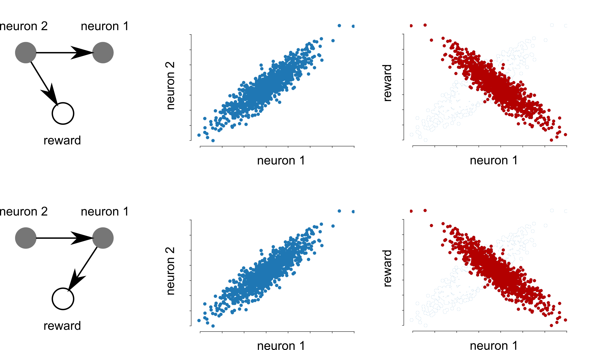
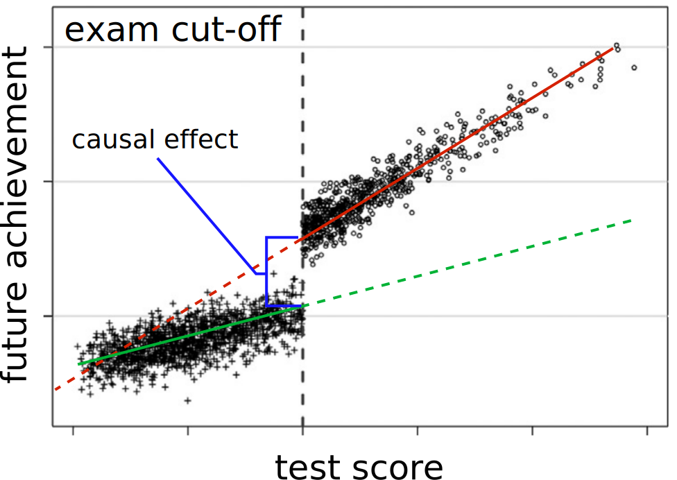
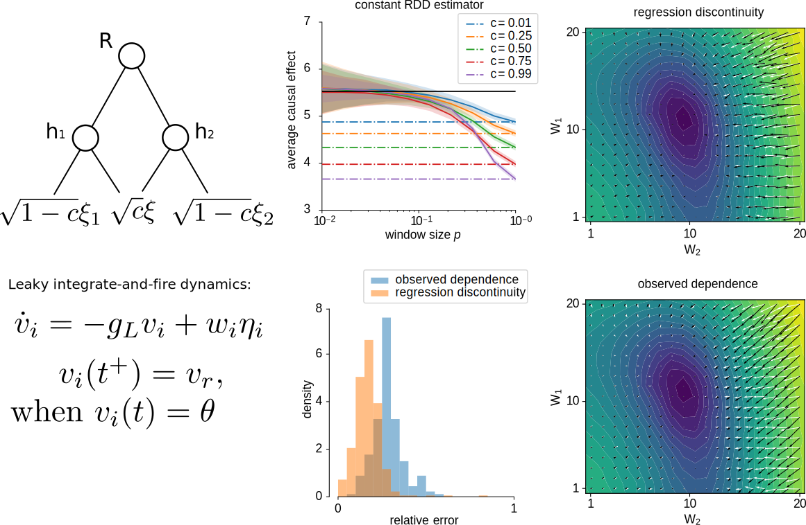
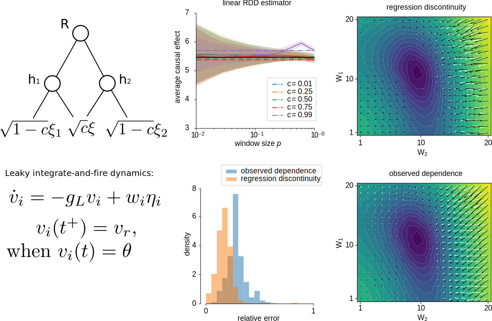
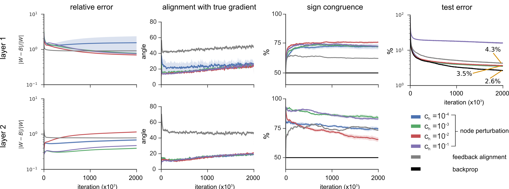
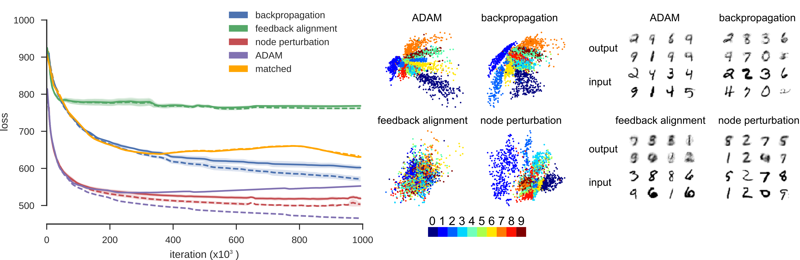
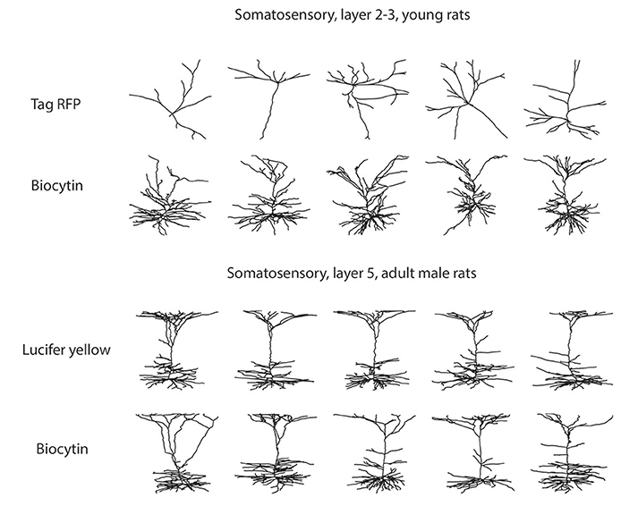
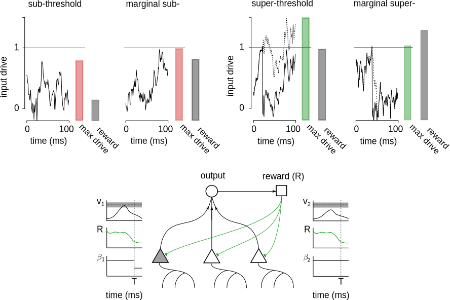
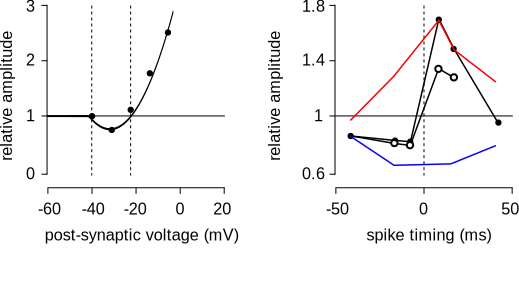

What is a neuron's contribution to performance, $R$, and so how should it change to improve?
The only algorithms to reach human-level performance in challenging tasks are based on deep networks trained with gradient descent
Werfel, Xie, Seung NIPS 2004
$\Rightarrow$ The brain may also use gradients to learn
How does a neural network learn?
Credit assignment (Definition 2):
How does a neuron estimate $\frac{\partial R}{\partial h}$ and so can update its weights/synaptic strengths, $W$?
The artificial neural network solution: backpropagation
Compute:
$$
\mathbf{e}^i = \begin{cases} \partial R/\partial \hat{\mathbf{y}}\circ \sigma'(W^{i}\mathbf{h}^{i-1}), & i = N+1;\\
\left((W^{i+1})^\mathsf{T} \mathbf{e}^{i+1}\right)\circ \sigma'(W^{i}\mathbf{h}^{i-1}), & 1 \le i \le N
\end{cases},
$$
Then $\frac{\partial R}{\partial \mathbf{h}^i} = (W^{i+1})^T \mathbf{e}^{i+1}$
But:
Relies on a feedback network knowing $(W^i)^T$
No such structure known to exist in the brain.
A solution for neuronal networks
Neurons observe a globally distributed reward/prediction error signal (e.g. dopamine)
Reinforcement learning algorithms learn policies to maximize reward in this setting
The REINFORCE algorithm correlates reward with a noisy pertubation in activity:
$$
\text{If } \tilde{\mathbf{h}}^i = \mathbf{h}^i + \xi^i, \text{ then } \mathbb{E}(\tilde{R}\xi^i) \approx \frac{\partial R}{\partial \mathbf{h}^i}
$$
But:
Requires each neuron measures an IID noise source, $\xi^i$, or knows its output relative to some expected output.
Does not scale well – variance proportional to number of neurons
$\Rightarrow$ No satisfactory solution to credit assignment problem
The problem: noise correlations and confounding

$\Rightarrow$ Viewing learning as a causal inference problem may provide insight
Causality
Defined in terms of counterfactuals or interventions
The causal effect: $\beta = \mathbb{E}(P|A\leftarrow 1) - \mathbb{E}(P|A\leftarrow 0)$
How can we predict the causal effect from observation?
Causality
Defined in terms of counterfactuals or interventions
The causal effect: $\beta = \mathbb{E}(P|A\leftarrow 1) - \mathbb{E}(P|A\leftarrow 0)$
How can we predict the causal effect from observation?
Learning – which actions cause reward?
Credit assignment (Definition 3):
What is a neuron's causal effect on reward, and so how should it change to improve performance?
$$
\frac{\partial R}{\partial h} \approx \mathbb{E}(R| H_i \leftarrow 0) - \mathbb{E}(R| H_i \leftarrow 0)
$$
REINFORCE-based methods rely on a neuron's activity being randomized (like an RCT)
$\Rightarrow$ Can a neuron solve this causal inference problem without randomizing?
An observation
Decisions made with arbitary thresholds let us observe counterfactuals

Adapted from Moscoe et al, J Clin Epid 2015
Known as regression discontinuity design (RDD) in economics
Two further observations:
A neuron only spikes if its input is above a threshold
A spike can have a measurable effect on outcome and reward
Suggests regression discontinuity design can be used by a neuron to estimate its causal effect.
Specifically, propose a neuron approximates:
$$
\frac{\partial R}{\partial h^i}\propto \mathbb{E}(R|h^i \leftarrow 1) - \mathbb{E}(R|h^i \leftarrow 0)= \beta^i
$$
and uses RDD to estimate $\beta$.
RDD as a way for a neuron to solve credit assignment
Lansdell and Kording, bioRxiv 2019
Inputs that place the neuron close to threshold are unbiased estimate of causal effect
Can operate with correlated noise sources, no need to measure an independent noise source
Demonstration on a 2 neuron network

Demonstration on a 2 neuron network

Using $\beta$ to update weights
Under the assumptions:
Parameters only affect the reward through neuron's spiking activity, meaning $\mathbb{E}(R|H)$ is independent of parameters $\mathbf{w}$.
The gradient term $\frac{\partial \mathbb{E}(H_i|H_{j\ne i})}{\partial w_i}$ is independent of $H_{j\ne i}$.
Neurons $H_{j\ne i}$ satisfy the backdoor criterion with respect to $H_i \to R$.
Then:
$$
\frac{\partial R}{\partial w^i_j} \approx \frac{\partial H^i}{\partial w^i_j} \beta^i
$$
Operates over timescales where a spike matters and feedback can be provided (< ~10Hz)
Weights in the final layer converge, in the following way
Theorem 1: The least squares estimator
\begin{equation*}
(\hat{B}^{N+1})^T = \hat{\lambda}^N (\mathbf{e}^{N+1})^T\left(\mathbf{e}^{N+1}(\mathbf{e}^{N+1})^T\right)^{-1},
\end{equation*}
converges to the true feedback matrix, in the sense that:
$$
\lim_{c_h\to 0}\text{plim}_{T\to\infty} \hat{B}^{N+1} = W^{N+1},
$$
where $\text{plim}$ indicates convergence in probability.
Learning feedback weights with perturbations
Weights in all layers converge, for a linear network
Theorem 2: For $\sigma(x) = x$, the least squares estimator
$$
\begin{equation*}
(\hat{B}^{n})^T = \hat{\lambda}^{n-1} (\mathbf{\tilde{e}}^{n})^T\left(\mathbf{\tilde{e}}^{n}(\mathbf{\tilde{e}}^{n})^T\right)^{-1}\qquad 1 \le n \le N+1,
\end{equation*}$$
converges to the true feedback matrix, in the sense that:
$$
\lim_{c_h\to 0}\text{plim}_{T\to\infty} \hat{B}^{n} = W^{n}, \qquad 1 \le n \le N+1.
$$
Learning feedback weights with perturbations
Weights in all layers converge, for a linear network
Corollary 1: For $\sigma(x) = x$, the least squares estimator
$$
\begin{equation*}
(\hat{B}^{n})^T = \hat{\lambda}^{n-1} (\mathbf{\tilde{e}}^{N+1})^T\left(\mathbf{\tilde{e}}^{N+1}(\mathbf{\tilde{e}}^{N+1})^T\right)^{-1}\qquad 1 \le n \le N+1,
\end{equation*}$$
converges to the true feedback matrix, in the sense that:
$$
\lim_{c_h\to 0}\text{plim}_{T\to\infty} \hat{B}^{n} = \prod_{n}^{j=N+1} W^{j}, \qquad 1 \le n \le N+1.
$$
A small example
Test on a 4 layer network solving MNIST
Learns to more closely approximate true gradient than random weights

Lansdell, Prakash and Kording, ICLR 2020
A (slightly) larger example
Test on a 5 layer autoencoding network on MNIST
Feedback alignment fails to solve this task
Node perturbation learns faster than backprop w stochastic gradient descent
Comparable to BP with ADAM optimzer

A larger example
Also leads to improved performance on CNNs
Too deep to propagate approximate signals through all layers
Use direct feedback alignment instead
dataset
BP
NP
DFA
CIFAR10
76.9$\pm$0.1
74.8$\pm$0.2
72.4$\pm$0.2
CIFAR100
51.2$\pm$0.1
48.1$\pm$0.2
47.3$\pm$0.1
Mean test accuracy of CNN over 5 runs trained with backpropagation, node perturbation and direct feedback alignment (DFA)
Summary
Shown how:
neurons can use their spiking threshold to estimate their causal effect on reward
a perturbation-based learning rule can be used to train a feedback network to provide useful error information
A combination of the two approaches can provide biologically plausible and scaleable learning systems
Applications in:
Neuromorphic hardware – learning with spiking networks
Application specific integrated circuits (ASICs) – learning without weight transport
Causal tools for machine learning, neuroscience, and intersections between them
Paths to better causal inference:
Quasi-experimental methods (e.g. thresholds, RDD)
Invariant prediction
Big data
Causal tools for machine learning, neuroscience, and intersections between them
Paths to better causal inference:
Quasi-experimental methods (e.g. thresholds, RDD)
Invariant prediction
Big data
Thresholding for conservative exploration in contextual multi-armed bandits
Lansdell, Triantafilou, and Kording 2020. submitted
Causal tools for machine learning, neuroscience, and intersections between them
Paths to better causal inference:
Quasi-experimental methods (e.g. thresholds)
Invariant prediction
Big data
Causal tools for machine learning, neuroscience, and intersections between them
Paths to better causal inference:
Quasi-experimental methods (e.g. thresholds)
Invariant prediction
Big data
Quantifying biases in neuron morphology due to staining method

Farhoodi, Lansdell, and Kording 2019. Frontiers in neuroinformatics
Causal tools for machine learning, neuroscience, and intersections between them
Understanding our own learning:
BCIs as testbed for credit assignment
Learning to learn causal inference
Acknowledgments
Konrad Kording (U Penn)
Kording lab
Ari Benjamin
David Rolnick
Roozbeh Farhoodi
Prashanth Prakash
Adrienne Fairhall (UW)
Fairhall lab
Rich Pang
Alison Duffy
Chet Moritz (UW)
Ivana Milovanovic (UW)
Cooper Mellema (UT Austin)
Eberhard Fetz (UW)
Sofia Triantafilou (UPitt)
RDD as a way for a neuron to solve credit assignment

Lansdell and Kording, bioRxiv 2019
Is this realistic?
Consistent with:
current models of sub-threshold dependent plasticity
current models of neuromodulator dependent plasticity

Additionally would predict super-threshold dependent plasticity
How to test?
Over a fixed time window a reward is administered when neuron spikes
Stimuli are identified which place the neuron's input drive close to spiking threshold.
RDD-based learning predicts an increase synaptic changes for a set of stimuli containing a high proportion of near threshold inputs, but that keeps overall firing rate constant.